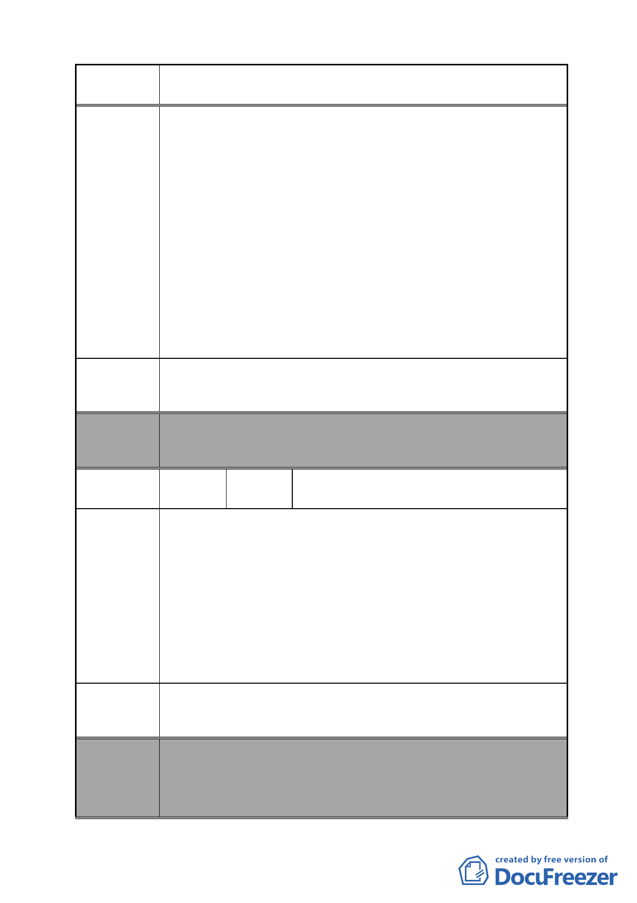

案 名 變更臺北市南港區鐵路地下化沿線土地主要計畫案
建議辦法
及繳交電費等業務，如拆除後將影響南港地區用戶用電權
益，不符公眾利益。
2.本處南港線路維修中心為新建築物，至今只使用 5 年，外觀
尚屬新穎，本公司為國營事業受審計法監督，未達使用年限
即拆除報廢，屆時將為審計部糾正。且該維修中心位於規劃
區邊緣，保留後應不致影響整體景觀。故建請將該線路維修
中心，不予納入規劃案中。
3.另編號 C 區塊新計畫為公園用地，惟未載明為多目標使用及
變電所保留用地，僅於第捌條其他說明中標示「…多目標使
用，惟涉變電所等鄰避性設施使用時，須舉辦公開說明
會。」，易造成民眾誤認無興建變電所之需要，憑添興建變
數，建議於主計畫案中載明為多目標使用及變電所保留地，
並刪除公開說明會詞語。
建請將本處南港線路維修中心不納入規劃案中。
委員會 本案除文字誤繕應再作修正外，其餘依市府本次會議所送修
決議 正計畫書內容通過。
編號
陳情理由
53
陳情人
臺北市政府函轉闕議員枚莎協調昆陽街
拓寬陳情案結論
1.鐵路地下化後，昆陽街塞車情況已好轉，實無拓寬之必要。
2.昆陽街西側至 108 號止，為 15 公尺寬之道路，但自 116 號
（印刷廠）起至昆陽站 4 號出口之道路卻又縮小，116 號（印
刷廠）及忠孝東路 449 號也退縮 5 公尺，但是因為捷運出口
之排氣房阻礙無法拓寬（已無腹地），形成街頭寬巷尾小的
道路，反而容易造成交通打結。
3.昆陽街拓寬後，車流量增加，恐影響玉成國小、南港國中、
南港高中學生及附近居民交通安全，故不宜拓寬。
1.昆陽街無拓寬必要，建議南港路三段 47 巷、67 巷拓寬。
建議辦法 2.請都發局研擬降低公設比例，並提出容積獎勵的草案。
委員會
決議
本案除文字誤繕應再作修正外，其餘依市府本次會議所送修
正計畫書內容通過。
（市府本次會議所送修正計畫書，本案將不拓寬昆陽街，逕
依現行規定辦理）
- 57 -